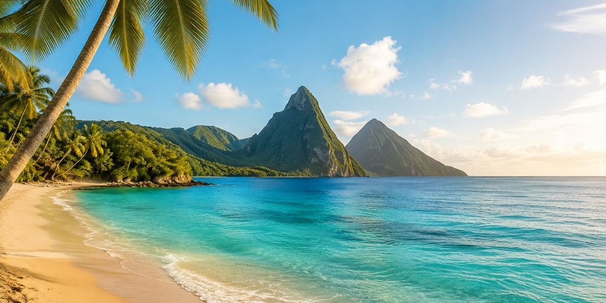

Разбор микрорайонов
Мы разделяем крупные курортные зоны — например, Hotel Zone в Канкуне или Тулум — на микрорайоны с честным разбором плюсов и минусов каждого участка.

О проекте Travel Radar LK · Независимые travel-исследования
Структурированные разборы микрорайонов, реальная логистика и честная экономика поездок по Канкуну, Ривьере-Майя, Тулуму и Доминикане — без маркетингового шума.
Наша миссия
Правильный выбор района важнее выбора конкретного отеля.

Проект Travel Radar LK создан, чтобы помочь путешественникам принимать взвешенные решения: в каком районе остановиться, какие скрытые расходы заложить в бюджет и как избежать маркетинговых ловушек при выборе отеля.
Мы не публикуем поверхностные восторженные обзоры. Наш фокус — структурированная, честная информация, основанная на глубоком исследовании каждого направления.
Мы разделяем крупные курортные зоны — например, Hotel Zone в Канкуне или Тулум — на микрорайоны с честным разбором плюсов и минусов каждого участка.
Мы анализируем стоимость трансферов и удалённость от аэропортов и паромов. Дешёвый отель вдали от инфраструктуры на деле часто обходится дороже.
Редакционный процесс
Каждый разбор направления и чек-лист проходит четыре последовательных этапа проверки перед публикацией.
Изучаем повторяющиеся жалобы и сильные стороны в реальных отзывах гостей, а не только среднюю оценку отеля.
Проверяем спутниковые карты, доступ к пляжу, сезонность саргассума, время в пути от аэропорта и локальный транспорт.
Учитываем трансферы, курортные сборы, налоги и реальные траты на месте, чтобы бюджет совпадал с реальностью.
Сверка локального контекста с региональными специалистами и финальный редакционный контроль перед выходом.
Редакция
Мы не делаем вид, что один человек лично посетил тысячи отелей. Travel Radar LK объединяет системную аналитику и локальную региональную экспертизу.

Основатель · Главный редактор · Ведущий исследователь
Леонид основал Travel Radar LK и разработал его исследовательскую методологию. В качестве главного редактора он контролирует стандарты исследований, редакционное направление и финальную проверку каждого гайда — заменяя поверхностные оценки анализом тысяч отзывов, спутниковых карт и транспортной логистики.
Этот системный подход сформирован более чем двадцатилетним опытом управления сложными ИТ-инфраструктурными проектами на позиции Senior Infrastructure & Systems Engineer — дисциплиной, которую он сегодня применяет в travel-исследованиях.
Карибский региональный советник
Родился и вырос на острове Сент-Томас. Как коренной житель региона, Кимали глубоко понимает историю, культуру и реальную специфику островной жизни на Карибах.
Его армейский бэкграунд в США и внимание к деталям помогают проекту в мониторинге региональных новостей, фактчекинге и оценке реальной обстановки — чтобы гайды отражали местный контекст, а не догадки со стороны.

Специалист по направлению Мексика
Профессиональная американская журналистка, выпускница Университета Висконсин—Мэдисон. После многолетней работы редактором журнала о путешествиях в Денвере Клэр переехала в Пуэрто-Морелос — прибрежный городок между Канкуном и Плайя-дель-Кармен.
Посетила более 24 из 32 штатов Мексики — от крупных курортов до скрытых сенотов и аутентичных городов. Клэр отвечает за оценку реальной атмосферы мексиканских направлений, маршруты и визуальную подачу проекта.
Направления исследований
Главный фокус редакции — карибское побережье Мексики, с активным расширением материалов по Доминикане и островам Карибского бассейна.
Сравнение районов, чек-листы выбора отеля, сезонность саргассума, трансферы из аэропорта и реальные бюджеты поездок 2026.
Открыть хаб Мексики Хаб страны
Хаб страны
Пунта-Кана, Кап-Кана, Байяибе и северное побережье — честное сравнение пляжей, спокойной воды, логистики и отелей all-inclusive.
Открыть хаб Доминиканы
Региональный хабСравнение островов, маршруты и паромы, круизные eSIM, планирование вне сезона ураганов и реальная стоимость недельного отдыха.
Открыть хаб КарибовРедакционная политика
Принципы, по которым мы отбираем факты, проверяем рекомендации и сохраняем независимость от отельного маркетинга.
Мы отдаём приоритет геолокации, реальной стоимости трансферов и агрегированным данным отзывов, а не единичным субъективным впечатлениям.
Мы не принимаем оплату за обзоры отелей и не продаём места в рейтингах. Все рекомендации основаны исключительно на собственном анализе.
В материалах могут встречаться партнёрские ссылки. Они не увеличивают цену бронирования для вас, но помогают сохранять независимость проекта.
Ноябрь 2025
Создали собственную методологию исследований в ответ на необъективные рекламные обзоры.
Начало 2026
Запустили базовую серию глубоких разборов районов Канкуна и Ривьеры-Майя.
Лето 2026
Сформировали структурированную библиотеку по районам, отелям, бюджетам, безопасности и сезонам.
Настоящее время
Регулярно обновляем существующие гайды и расширяем глубокое покрытие Доминиканы и Карибских островов.
Редакция
Нашли неточность в обзоре, заметили изменение условий отеля или хотите предложить тему исследования? Будем рады вашему письму.
Начните планирование
Начните с центрального хаба по Ривьере-Майя или перейдите ко всей библиотеке гайдов по Мексике и Карибам.